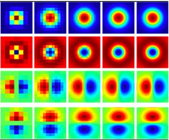
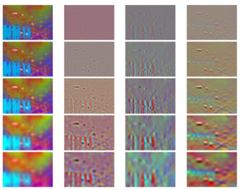
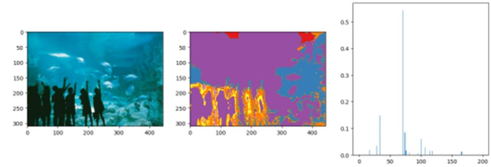
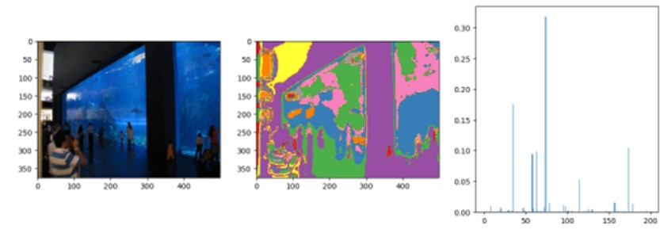
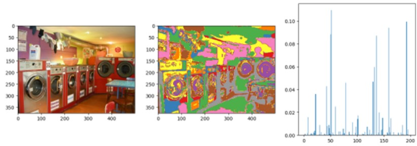

Bag of Visual Words for Scene Classification
Classification is one of the most classic tasks in computer vision. Given an image from a few predefined categories, classification requires to determine its belonging to which category. We developed a system for scene classification, experimenting on a subset of the SUN Image database consisting of eight scene categories. It is an end to end system that will, given a new scene image, determine which type of scene it is. In this project, we built a representation based on bags of visual words and used spatial pyramid matching for classifying the scene categories.
 We started by building a dictionary of “visual words” from training data. This is similar to building something that is similar to a dictionary of words. We began by using Harris corner detector to pick interest points, extract visual words from interest points on images, form a visual dictionary, and represent each image as a vector of visual words.
Second step is to build a recognition system using the visual word dictionary built and training images that contain the scenes and the name of the scenes that are attributed to it. In this step, we used the visual words extracted from the previous step and a technique called Spatial Pyramid Matching to extract visual features from images. We then used these features and ground truth labels to build a simple recognition system.
We can see in figure how the visual words histogram is similar between the two images of the aquarium and distinctly different from the laundromat.
  Though visual words do a good job in classifying, nowadays it has been shown that deep learning methods have a better generalization to thousands of classes. This is a limiting factor for this method but gives a great insight into how deep learning methods work on images.